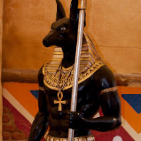
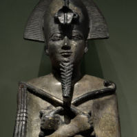
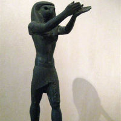

Mitologia Egípcia
A mitologia egípcia reúne diversos mitos, lendas e estórias que fizeram parte do imaginário religioso no Egito Antigo até a chegada do Cristianismo.
Lembre-se que na Antiguidade a religião egípcia era baseada no politeísmo, ou seja, o culto a vários deuses que ocorriam geralmente nos templos dedicados a eles.
As lendas disseminadas tinham como temas, a origem do mundo, da natureza, dos homens e dos deuses. Elas explicavam fenômenos ainda desconhecidos pela ciência, sendo, portanto, de grande importância para a construção do imaginário dos egípcios.
Neterus Primordiais
Nun: simbolizava a água ou o líquido cósmico que deu origem ao Universo.
Atum: representa a transformação de Nun, sendo considerado aquele que deu origem a explosão do Universo (semelhante ao Bing Bang) e que gerou os diversos corpos celestes, separando assim, o céu e a Terra.
Amon: esposa de Mut, ele é considerado o rei dos deuses.
Aton: relacionado ao sol, ele foi o deus do atomismo que estava relacionado com o disco solar.
Rá: força mística que representava a alma dos deuses e dos homens.
Ka: simbolizava a água ou o líquido cósmico que deu origem ao Universo.
Ptah: marido de Sekhmet e de Bastet, representava o deus criador e protetor da cidade de Mênfis. Além disso, era considerado deus dos artesãos e arquitetos.
Hu: representava a palavra de criação do Universo.
Neterus Geradores
Shu: filho de Atum e deus do ar.
Tefnut: filho de Atum e deusa da umidade.
Geb: filho dos irmãos Shu e Tefnut, Geb é do deus da terra.
Nut: filha dos irmãos Shu e Tefnut, Nut é a deusa dos céus.
Neterus da Primeira Geração
Osíris: filho mais velho do casal Geb e Nut, Osíris foi o primeiro faraó do Egito assassinado por seu irmão Set passando a ser juiz dos mortos no mundo subterrâneo.
Ísis: esposa-irmã de Osíris e filha de Geb e Nur, é deusa do amor, da maternidade, da fertilidade e da magia. É protetora da natureza e considerada modelo de mãe e esposa.
Seth: deus da tempestade, do caos e da violência. Foi ele quem matou seu irmão Osíris.
Néftis: irmã-esposa de Seth e de Osíris e muito parecida com sua irmã Ísis, sendo considerada outra deusa mãe na mitologia egípcia.
Neterus da Segunda Geração
Hórus: filho de Osíris e Ísis, Hórus é o deus do céu quem matou seu tio Seth por vingança.
Tot: deus da sabedoria.
Maat: mulher de Toth, deusa da justiça, da verdade e da ordem.
Anúbis: filho de Osíris e Néftis, Anúbis é o deus dos mortos e do submundo, era ele que guiava os mortos após sua morte.
Anuket: deusa da fertilidade a qual estava relacionada com a água.
Bastet: filha de Maat, é a deusa da fertilidade e do parto, protetora das mulheres.
Sokar: relacionado com a morte, era um deus funerário.
Sekhmet: filha de Rá e por isso, reflete o aspecto destrutivo do sol.